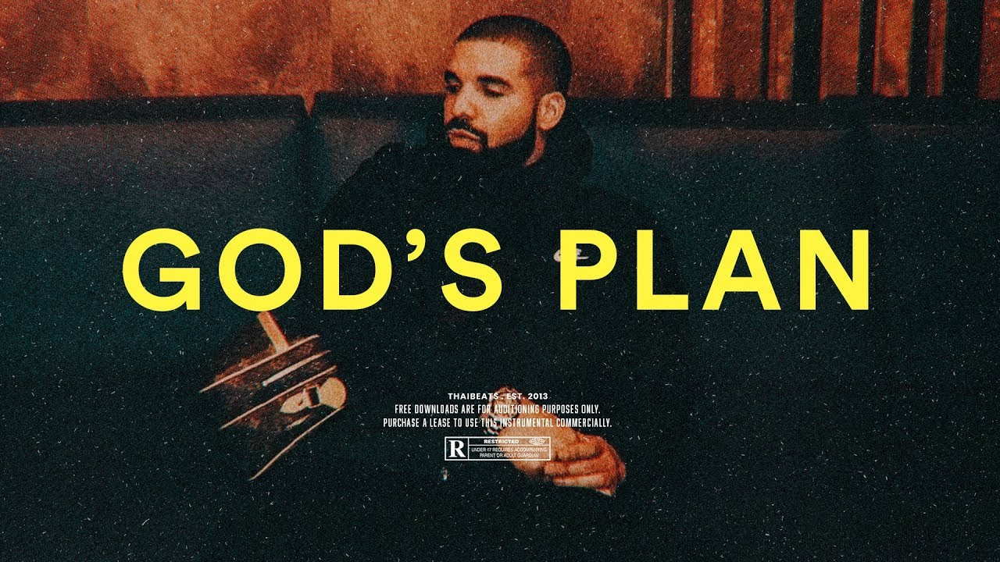

Old School Rap
Old School Rap: This was the earliest and original style of hip hop in the 1970s to 1990s. During this time the lyrics were not as essential a part of the music. However, there were exceptions. Many of the legends are larger than life figures in the rap genre today emerged during this time period. Some of these figures were Tupac, Grandmaster Flowers, and DJ Kool Herc.

History: Old-School Hip Hop has an interesting history as it was the earliest commercially recorded hip hop music. It began in the 1970s but continued into the 1990s. As it transformed throughout the years it began to explore more socially relevant ideas. The music also started much simpler only using a few syllables per bar of music with simply rhythms and a moderate tempo.

Hit em Up – This was a song by legendary rap artist Tupac Shakur. This song gained notoriety and popularity for being the most “savage” diss track ever. This track was such a large event as Tupac named his enemies and even threatened to murder them. This was unheard of at the time as during released music insults would be concealed. Finally, this song was the quintessial song which defined the East vs West Music Battle.
Melodic Rap

Melodic Rap/Pop Rap: This is a genre that is more lighthearted rap music that has fused with pop music culture. It is known for its melodius vocals and catchy tunes. This nature of being more mainstream makes it have much less aggressive lyrics compared to old school hip hop and appealed to a different audience. This music evolved from old school hip hop and got its start in the 1980s.

History: This genre evolved from old school hip hop and began in the 1980s when artists like Run DMC and LL Cool J broke into the mainstream. The genre really began to gain popularity in the 1990s with MC Hammer and Vanilla Ice, but the genre was still not as widely accepted. However, over time especially in the 21st century the genre has exploded in popularity with artists like Drake, Lil Wayne, and many more and gained mainstream acceptance.

God’s Plan: This is a song by arguably the most popular rap artist of the 21st century: Drake. This song covers a number of important themes in his life, particularly his successful journey through the music industry and how he has been able to surmount all the obstacles and enemies placed in his way. He concludes by saying that overall all of this is just the Lord’s Plan and that it will all work out.
Trap

Emotional Rap: This is the newest of all the genres and grew from the early 2010s SoundCloud Rap Scene. This was a new branch of rap that fused the Emo Music scene with the traditional beats and rapping of Hip-Hop. This genre is much more emotional and personal than traditional rap and focuses on themes of depression, loneliness, suicide, and heartbreak. This genre has become extremely popular with teens and young adults.

History: This genre of emotional rap during the 1990s and 2010s was used as an insult to rappers such as Kanye and Drake as a way of saying their lyrics were too emotional. Then in the 2010s Emo Rap was pioneered by an artist by the name of Bones who helped influence the formation of a Group called GBC. This style influenced many extremely popular artists of today such as Lil Peep, Lil Tracy, etc. Finally Lil Uzi Vert took influence from these artists and brough the genre to the mainstream with the song “XO Tour Lif3” in 2017.

Ill Be Fine – This is a song by the late artist Juice Wrld who became popular off his melodic rap music. In this song Juice Wrld is talking about how he misses a girl who left him and who he is going to be fine. He is also taking a lot of painkillers and other medications that others are telling him to stop, but he insists that he will be fine. Essentially, he is going through a lot and is deeply hurting.